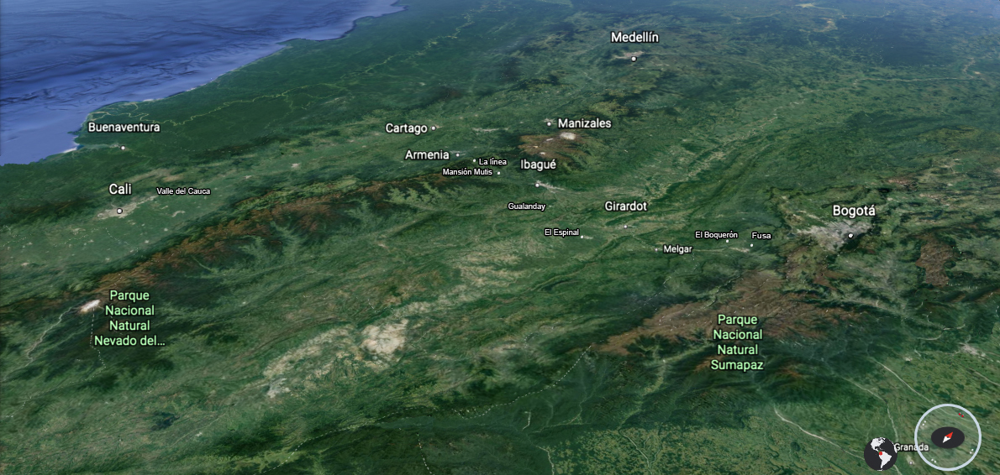

Texto de William Ospina
Colombia, donde el verde es de todos los colores
Un viaje por Colombia.
...Así llega el descenso hacia el Valle del Cauca, otra vez a la luz violenta del trópico, anchas llanuras cortadas a lo lejos por el muro azul y remoto de los farallones del oeste, la cordillera vertical de paredes de basalto detrás de la cual se agitan las tormentas del Pacífico. Este es el valle de la -María- de Jorge Isaacs, que no es solo el relato de un amor romántico, sino una descripción minuciosa de lo que fueron los paisajes de esta región de América a finales del siglo XIX, de lo que era la vida de las grandes haciendas, de sus campesinos, los azares de la cacería de los tigres, la lucha de los seres humanos en la desaforada naturaleza, los jinetes que cruzan a medianoche los rios crecidos, los que descienden por los cañones del río Dagua, entre enormes peñascos, musgos, helechos y aguas purísimas, viniendo a buscar el valle desde el muelle escondido de Buenaventura, el principal puerto sobre el Pacífico. La llanura no está tan llena como otrora de ceibas y samanes, de frutales y flores, pero se siente en el viento el aroma de los mangos maduros, se suceden las hileras de matarratones floridos, los caracolíes, los chiminangos bajos que dan a veces al paisaje un aire de África; las extensiones de cultivos de soya, de sorgo, de algodón y, sobre todo, de caña de azúcar. Región de grandes ingenios azucareros, todo aqui se parece al interior de Cuba, los plantíos, las muchedumbres de negros y mulatos corteros de caña, el olor de panela en el viento. Y al final de este viaje por todas las emociones que pueda deparar el paisaje, Cali, extendida más allá del río Cauca, junto a los primeros cerros del occidente, con sus largos barrios de palmeras, sus calles viejas perfumadas al atardecer por el aroma de las camias, los guayacanes morados que llueven sus flores sobre las avenidas, la pesada canícula, las barriadas de alegres hijos de África, los vendedores de rojos chontaduros en las esquinas, las discotecas nocturnas de salsa, las orillas ardientes del río y la sensualidad de los atardeceres, cuando sopla una brisa fresquísima que viene a través de los cañones desde el océano y que convierte a Cali en la única ciudad costeña sin mar; se diría que una ciudad del Caribe enclavada en los valles interiores, vecina de la densa y húmeda jungla del Pacífico.
Consciente de que el espacio es continuamente modifi cado por el tiempo, en Cien años de soledad, Gabriel Garcia Márquez se deleita a menudo mostrándonos un mismo paisaje en distintos momentos históricos. Cuando los hombres de Macondo se van a buscar la civilización, vemos el hallazgo de una vieja nave española encallada lejos del mar.
Frente a ellos, rodeado de helechos y palmeras, blanco y polvoriento en la silenciosa luz de la mañana, estaba un enorme galeón español. Ligeramente volteado a estribor, de su arboladura intacta colgaban las piltrafas escuálidas del velamen, entre jarcias adornadas de orquideas. El casco, cubierto con una tersa coraza de rémora petrificada y musgo tierno, estaba firmemente enclavado en un suelo de piedras. Toda la estructura parecía ocupar un ámbito propio, un espacio de soledad y de olvido, vedado a los vicios del tiempo y a las costumbres de los pájaros. En el interior, que los expedicionarios exploraron con un fervor sigiloso, no había más que un apretado bosque de flores.
Cuando ya nos hemos deleitado con ese esplendor a la vez verbal y visual, el escritor se permite mostrarnos el mismo lugar en otro momento del tiempo:
Muchos años después, el coronel Aureliano Buendía volvió a atravesar la región, cuando era ya una ruta regular del correo, y lo único que encontró de la nave fue el costillar carbonizado en medio de un campo de amapolas.
Necesitaríamos un autor como García Márquez para mirar esa ruta que acabamos de recorrer, entre la sabana y el Valle del Cauca, en distintos momentos de la historia. Como era en los tiempos irrecuperables de la América indígena, desde el país de maizales de los chibchas que pulían ranas de oro y panes de sal, bajando hacia la tierra de los alfareros tolimas y de los feroces pijaos, ascendiendo por las pendientes ver tiginosas hasta el país de los quimbayas de corazas de oro, y descendiendo de nuevo a la región de los calimas y a los llanos donde la cultura de los señores orfebres de Malagana llevó al refinamiento sus diseños de saltamontes y de pájaros. O como era a comienzos del siglo XIX, cuando salió Humboldt de la sabana que los había deslumbrado, donde el sabio gaditano José Celestino Mutis dirigía la labor a la vez científica y estética de la Expedición Botánica; trabajos de investigación completados por espléndidas láminas iluminadas con colores vegetales por Francisco Javier Matis, Salvador Riso y Pablo Antonio García, los mejores pintores de plantas del mundo. Cómo vería las tropicales orillas del rio Magdalena en ese pequeño puerto que aún no se llamaba Girardot, donde desfilaban los pescadores en sus piraguas y había mariposas sobe el lomo limoso de los caimanes, qué le decia este exhuberante mundo americano a ese observador exquisito que fundó la geografia moderna y enriqueció para siempre el sentido del paisaje de los hijos de Occidente, mientras iba viendo las palmas de cera y los bosques de niebla, la hoya del Quindíos todavía sin ciudades, cubierta por los mayos florecidos en morado y violeta; mientras percibía la ceniza de los yurumes en la noche verde de la cordillera; mientras buscaba en vano la desconocida flor de la guadua, que solo vino a encontrar en las lomas de Popayán meses después. Qué le decia mientras reposaba en Cartago en la casa del virrey que, sin saberlo nadie, había sido construida para él, y mientras cruzaba las extensiones inundadas del Valle del Cauca, la selva lacustre con ceibas y samanes enrojecida en las lomas por el salto nervioso de los venados al atardecer.
O cómo era ese mismo paisaje en 1812, cuando Nariño, salió de la sabana a la cabeza de un ejército de cundinumarqueses, de boyacenses y de antioqueños; un ejército que iba reduciéndose imperceptiblemente a medida que avanzaban por los cañones de Fusa, que se hacía menor mientras cruzban el rio Magdalena, de donde desertaron con sigilo muchos soldados, mientras acampaban en el aire frutal de la llanura de Melgar; esas tropas con las que Nariño soñaba detener en el sur el avance de la reconquista española, pero a las que habia que vigilar a cada instante en los recodos de carboneros de Ibagué y en las aguas diáfanas de Coello, ese ejército que se borraba en las nieblas de la cordillera Central para reaparecer más exiguo entre los helechos apretados del Quindío, y que al llegar al Valle del Cauca, donde libró varias batallas desespera das, pareció perder definitivamente el ardor y la confianza. Al sur lo esperaban los paisajes de Popayán, que en verano arden de cámbulos y de tulipanes naranja, y la deserción masiva de las tropas temerosas de enfrentar el cañón del Patía, donde acechaban aún en los recodos cuchillos feroces de indios guerreros, hasta el punto de que, cruzado el cañón, el general llegó con solo dos hombres y no tuvo otra alternativa que entregarse a la tropas realistas que pensaba vencer.
Por cada ruta central del territorio es posible rastrear los grandes episodios históricos, pero al márgen de esas rutas centrales, y aún visible desde ellas, el extenso paisaje colombiano parece hecho para testimoniar otra cosa, algo que afirmócier ta vez el poeta Auden, que la principal diferencia entre el viejo mundo y el nuevo es que en Europa, por perdido que alguien se encuentre, está en la cercanía de alguna ciudad centenaria, en tanto que todo americano ha visto con sus ojos comarcas prácticamente intocadas por la historia. Basta pensar en las espesas selvas del tapón del Darién, que cierran el camino hacia el istmo de Panamá; basta pensar en la infinita extensión de las ciénagas del norte o en los espesos bosques tropicales de Turbaco, basta pensar en el cañón del Chicamocha y en los páramos de Pamplona; basta pensar en los farallones de la Pintada , en los farallones de Cali, esas murallas azules que separan el cuerpo central del país de las selvas del oeste y de la extensión del Mar del Sur, del mar de Balboa, del mar de Pizarro, del océano interminable que a su vez separaba a los viejos americanos de su origen asiático; basta pensar en las llanuras inclinadas de Herveo, junto al volcán del Ruiz; en las gargantas de viento de la Sierra Nevada; en el cañón del Patia, hoy puntuado de aldeas resecas; en los páramos de Choachí y en los acantilados orientales de la sabana, antes de llegar a los valles de sauces de la tierra media y a las tierras cálidas de la Unión, basta pensar en la sierra del Cocuy, en la serranía de la Macarena, y basta pensar, por supuesto, en las extensiones del Casanare, que llenan de presentimientos misteriosos las primeras páginas de La vorágine, o en las selvas inmensas del Guaviare, del Vaupés y del Amazonas, mordidas hoy por los dientes dañinos de la sociedad industrial, pero que durante milenios estuvieron protegidos por los mitos del árbol de los frutos y la piel constelada de la gran anaconda.
FIN
William Ospina
Colombia, donde el verde es de todos los colores
Un viaje por Colombia.
¿Cómo se puede ser metódico en un territorio cuya naturaleza tiene la curiosa caracteristica de mezclar sin cesar todo con todo? En cada metro cuadrado, cuántas especies vegetales distintas. Cada tantos kilómetros, otro clima. La variedad se impone ante nosotros en el viaje más corriente, en cualquier recorrido por el territorio. Pensemos, por ejemplo, en un viaje por tierra entre Bogotá y Cali, el mismo que realizaron tantos indigenas a pie, tantos conquistadores a caballo, tantos viajeros maravillados a lo largo de los siglos, el viaje minucioso del barón von Humboldt desde el altiplano central hacia el oeste, descendiendo al valle del rio Magdalena, remontando de nuevo la cordillera Central hasta los riscos de La Línea, bajando luego hacia la cordillera Occidental, tras cuyos farallones se esconde el océano. En quinientos kilómetros de recorrido, a las velocidades y con las vías de hoy, se diria que vemos todos los climas, todos los árboles, todas las topografias.
El viaje comienza en la sabana de Bogotá, la fría llanura a 2600 metros sobre el nivel del mar, donde se extiende hoy una confusa metrópoli de ocho millones de habitantes, a la sombra de los cerros del oriente; sabana que se formó por la desecación de una inmensa laguna entre un cerco de montañas emergidas en el Cretáceo; este fértil altiplano andino estuvo sembrado de maizales en tiempos del gran reino de los muíscas, y está en la vecindad de los altos páramos del Sumapaz, regiones de silencio cubiertas por frailejones lanosos y chusques, por una apretada vegetación que se borra en la niebla. Cuando todavía se dilataba la llanura vasta y vegetal alrededor de una aldea de piadosos campanarios, aquí cantó sus desdichas, a finales del siglo XIX, uno de los poetas funda dores del Modernismo latinoamericano, José Asunción Silva. En versos melodiosos que, según Jorge Luis Borges, América no se resigna a olvidar, vimos asomar en palabras la noche más mágica del continente.
Una noche,
una noche toda llena de perfumes, de murmullos y de música de alas.
Una noche,
en que ardían en la sombra nupcial y húmeda las luciérnagas fantásticas,
a mi lado, lentamente, junto a mi ceñida toda, muda y pálida,
como si un presentimiento de amarguras infinitas
hasta el fondo más secreto de tus fibras te agitara,
por la senda que atraviesa la llanura florecida, caminabas...
Saliendo de la sabana que, después, entre acacias y alcaparros de flores amarillas, se llena de pinos, de araucarias negras y de urapanes altos y frágiles, llega el viajero al borde de los oscuros acantilados que se abren hacia el valle del Magdalena, desde donde declinan en su aroma grandes bosques de eucaliptos de troncos manchados y hojas azules. Es conmovedor el momento en que se abren las montañas incontables, "donde el verde es de todos los colores", verde amarillo las más cercanas, verde hiedra y musgo las más hondas, y después, por los picachos interminables, verdes cada vez más azules, apenas contrariados por manchas de niebla. No ha transcurrido una hora de viaje, y ya vamos cruzando declives floridos de clima más tibio, el descenso de grandes perspectivas entre Fusa y Chinauta, una región de planos inclinados formada hace millones de años por el descongelamiento de grandes casquetes de hielo de las cumbres del Sumapaz. Por allí descendemos, entre las buganvilias fosforescentes, entre paredes empinadas y por un vértigo de abismos pedregosos e inestables que declinan hacia tierra caliente, y que nos llevan a los cañones del Boquerón, donde la luz equinoccial parece arañar con heridas simétricas las paredes de roca en lo alto. Ya es tibia la atmósfera bajando hacia el cañón, se estrechan las gargantas de piedra junto al río, hierve el aire húmedo bajo la Nariz del Diablo, en un paisaje que lleva a pensar en remotos días de estruendo, hace muchos milenios, cuando las aguas abrieron el cañón con una fuerza de catástrofe. Ahora el calor es solo el preludio de los tulipanes ecuatoriales con sus enormes flores rojas. Aquí casi se oye la vieja voz de Jorge Isaacs, repitiendo su verso más bello.
Soñé vagar por bosques de palmeras ....
Bosques de palmeras llenan la vertiente, la llanura boscosa que nos lleva a Melgar y a Girardot, hasta la orilla de aguas pardas del río Magdalena. Es imposible describir la variedad de los árboles, ceibas y samanes, caracolíes, guamos y písamos, gualandayes y cámbulos, árboles de grandes troncos, árboles de hojas inmensas, y en medio de los bosques verdes algún guayacán florecido como una mancha de luz. Allá están las haciendas, el ganado diminuto entre las hierbas profundas, el horizonte lejanísimo agobiado por la enormidad de las nubes, las llanuras sembradas en el Espinal -en el corazón del Tolima-, donde al atardecer se alzan las nubes de mosquitos feroces, las garzas lentas, los balsos y los mangos de follaje densísimo, y el valle libre, apenas vigilado por los buitres colombianos, los gallinazos altos y negros que vuelan con deleitable perfección. Al final, otro pueblo adormecido bajo una nube de árboles, Gualanday, anuncia el recodo donde termina la llanura, donde se empina de nuevo el terreno y trepa entre desfiladeros al nivel medio de llanos de arrozales, de ocobos florecidos, de gualandayes y de cámbulos en Ibagué, a la sombra del nevado. Hace dos siglos, Humboldt, deslumbrado por estos paisajes cambiantes, fue al norte del Tolima a explorar las minas de oro de Santa Ana, y desde Ibagué remontó la cordillera hasta la casa del virrey en Cartago. Desde este llano medio, y solo cuando él quiere, descubre a veces el inmenso nevado del Tolima su cono blanquísimo. Aquí está la ciudad con sus rostros indígenas y mestizos, Ibagué con sus diestros hacedores de guitarras y tiples. Pero el camino busca la otra vertiente de la cordillera: una ruta sinuosa bajo bosques de carboneros de ramas extendidas, que se escalonan sobre las faldas y sombrean las cañadas. No tardará en cambiar el piso térmico: en el paisaje asoman los plátanos de hojas enormes, cada hoja del tamaño de un hombre, rasgadas por el viento, pencas de flores altas, y fluye el río Cocora junto a Coello, el paraíso del poeta Álvaro Mutis, la finca de tierra caliente donde pasó su infancia. También aquí podemos detenernos un instante, procurar que se haga de noche en el mundo, y retroceder unas décadas, si es preciso, para que no haya rumor de automóviles ni ronquido de camiones por las carreteras, sino solo esta lluvia colombiana, densa y profunda, y en ella la voz del desvelo de un hombre que desde su exilio vuelve aquí cada día, vuelve a invocar las grandes noches del Tolima, a celebrar en su "Nocturno" el don de la lluvia en esta preciosa penumbra:
Esta noche ha vuelto la lluvia sobre los cafetales,
sobre las hojas de plátano,
sobre las altas namas de los cámbulos;
ha vuelto a llover esta noche un agua persistente y vastísima
que crece las acequias y comienza a henchir los rios
que gimen con su nocturna carga de lodos vegetales.
La lluvia sobre el cinc de los tejados
canta su presencia y me aleja del sueño
hasta dejarme en un crecer de las aguas sin sosiego
en la noche fresquisima que chorrea
por entre la bóveda de los cafetos
y escurre por el enfermo tronco de los balsos gigantes.
Ahora , de repente , en mitad de la noche
ha regresado la lluvia sobre los cafetales
y entre el vocerío vegetal de las aguas
me llega la intacta materia de otros dias,
salvada del ajeno trabajo de los años.
De Coello comienza el ascenso a Cajamarca. Desde los bosques tropicales de carboneros asomados a la pendiente, pasando por el pueblo detenido entre desfiladeros, y ante una blanca y distante cascada en el centro de un paisaje fantástico, hasta los grandes abismos de La Linea, y en la altura, haya sol o haya niebla, los centenares de palmas de cera, sus rectos tallos blancos que estallan arriba en la delicada estrella negra del follaje. Desde los pasos altos se puede ver, en días despejados, la hoya del Quindio, parte de los departamentos del Quindio, de Risaralda y de Caldas, que hace siglo y medio eran todavia tierras virgenes, intocadas desde los tiempos de la aniquilación de los indios, y que hace menos de medio siglo eran todavía el viejo Caldas, montes de cañaduzales y de trapiches, la más viva región de la colonización antioqueña, el eje cafetero colombiano. Vertiginosamente descendemos de las cumbres brumosas de La Linea, en la volcánica cordillera Central, a Calarcá y Armenia. Donde estuvieron antes los bosques, ahora los simétricos cultivos de cafe, apenas sombreados por guamos y plátanos, convertidos por décadas en la principal riqueza del país. Templadas tierras fértiles abundantes en flores, y más allá las llanuras de Caicedonia, que muestran a lo lejos palmares edénicos, y las formas apacibles del Alambrado, caminos de helechos y bosques donde se ven yarumos cenicientos, espaciados follajes que en medio de los árboles oscuros parecen manchas de plata.
Así llega el descenso hacia el Valle del Cauca... (volver al inicio)